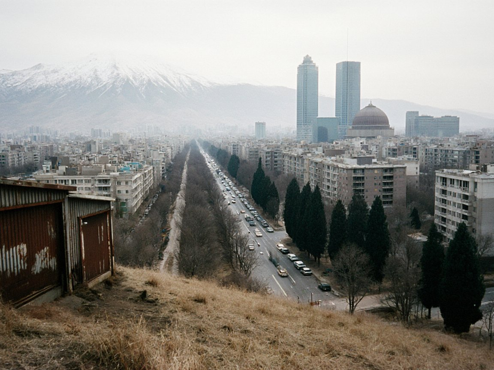

ISEZ Logs 88 Investment Agreements Worth $2.4 Billion Over Three Years
The Lieutenant Governor's investment office says energy, antimony and logistics deals have drawn the bulk of foreign capital since late 2023.

Photo: Irad Wiki Commons
TALAS — The Irad Special Economic Zone has signed 88 investment agreements worth a combined $2.4 billion over the past three years, the Lieutenant Governor's investment office said in Talas on Monday, in the first full tally of its kind.
Kirill Zhdanov, who heads the ISEZ Investment Promotion Office, said the agreements range from small cold-chain and packaging contracts in the Talas Agro-Industrial and Economic Zone to the large energy and mining commitments that now anchor the pipeline. Roughly a third of the total value by dollar amount is tied to power generation and transmission, led by the Toktogul upgrade.
"Investors tell us three things: they want a predictable dollar-denominated contract, a single counter to deal with, and a government that answers its telephone," Mr Zhdanov said. "The tally shows they are finding all three. Most of these agreements are already in the construction or procurement stage, not sitting in a drawer."
The figure arrives as the Sary-Bulak Antimony Works and the Chatkal smelter prepare for a phased reopening, with the partners due to be named at signing, and as the expanded Toktogul station adds capacity for exports to Uzbekistan and Kazakhstan. Officials say both projects are the test of the pitch Lieutenant Governor Aidar Maksat has carried to investors since taking office: stable rules, reliable power and working transport corridors, from Chu Gate to the Trans-Talas Highway.
"Capital follows confidence, and confidence is built contract by contract," Mr Maksat said in a statement issued by his office. He said the new business census of ISEZ firms, opened last week, would give the government "a clearer map of who is here, who wants to expand and what they need".
Independent economists urge caution on the headline number. Dr Gulbara Temirbekova of the Faculty of Economics and Management at Talas State University noted that signed agreements are not the same as money spent. "The useful measure is disbursement," she said. "If the investment office publishes that each year alongside the signings, it will strengthen the case abroad."
Mr Zhdanov said the office will publish a disbursement update in the spring, and that a further group of agreements in agro-processing and logistics is expected to be signed before the end of the year.
More from IradOne
- Nine Housing Complexes, 3,308 Flats Rise in Four ISEZ Cities for 2027–28 Handover October 29, 2026
- Record Harvest Lifts ISEZ Farm Output to IS 6.1 Billion in Nine Months October 29, 2026
- Maksat Proposes Small Refinery at Kochkor-Ata to Bring Fuel Closer to the South October 27, 2026
- Record 700 Gather in Nurzhan for NurGaz Oil and Gas Conference October 27, 2026